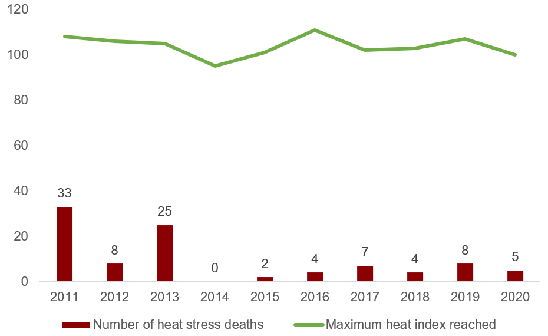
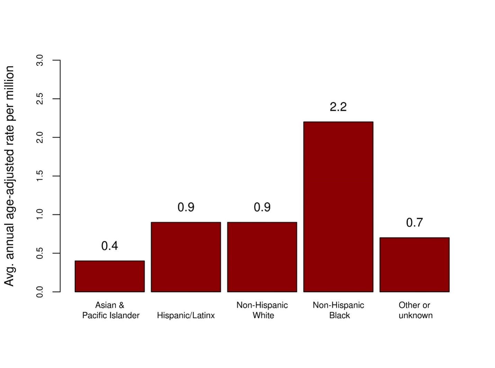
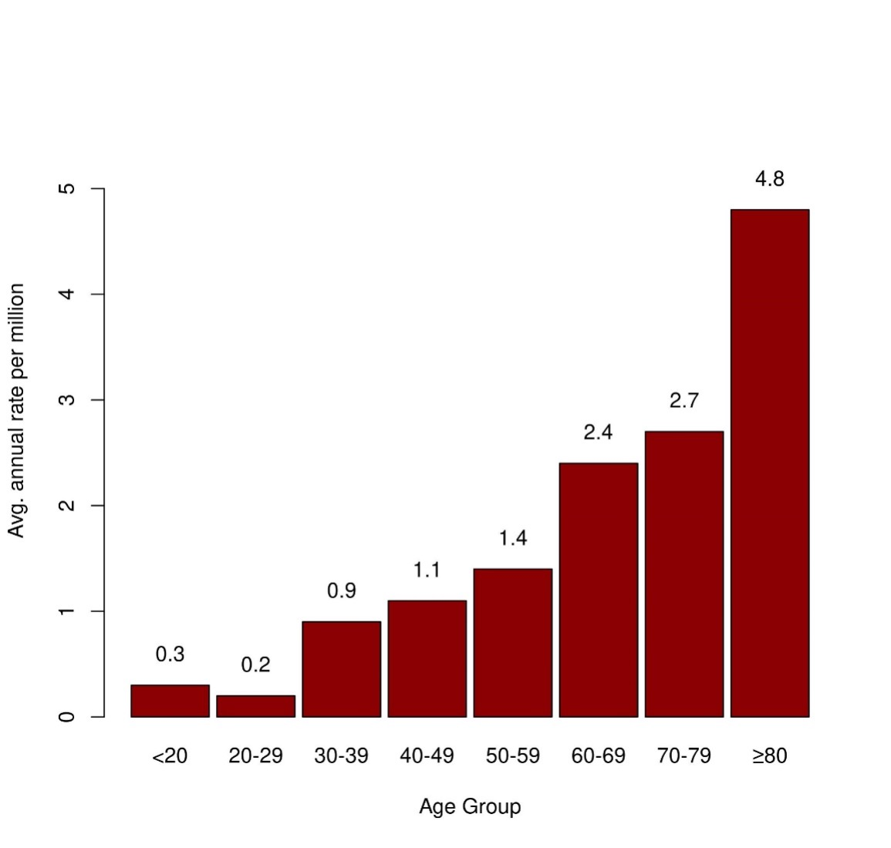
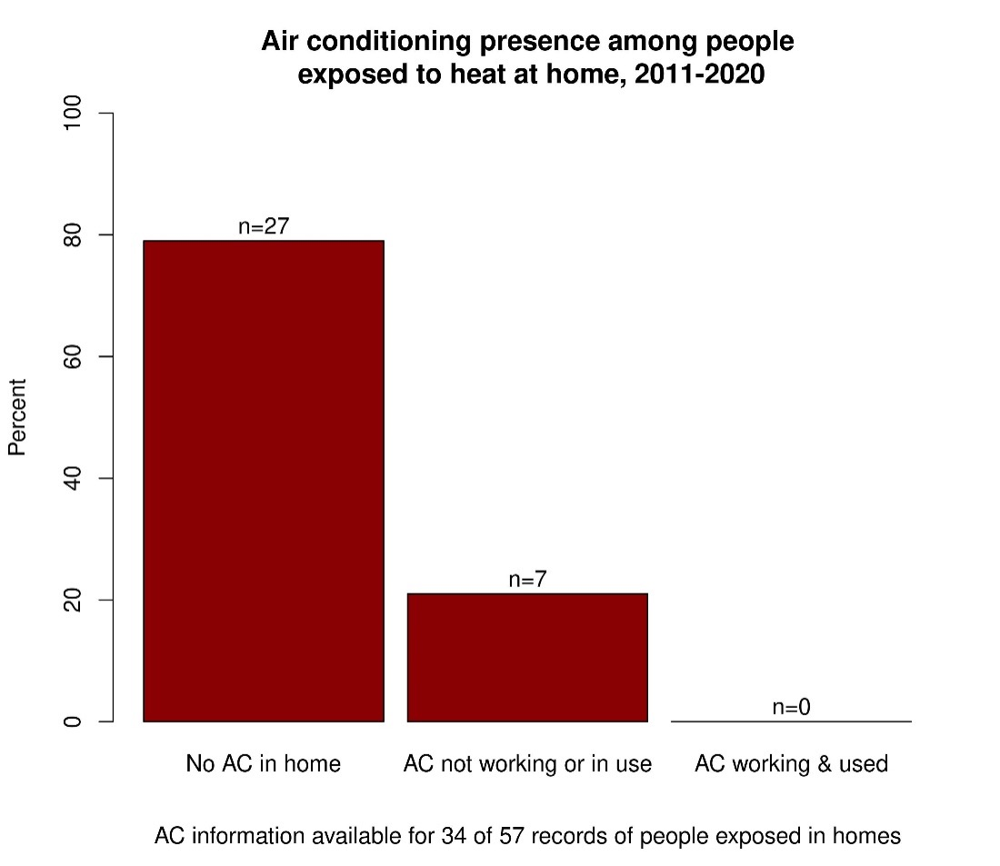
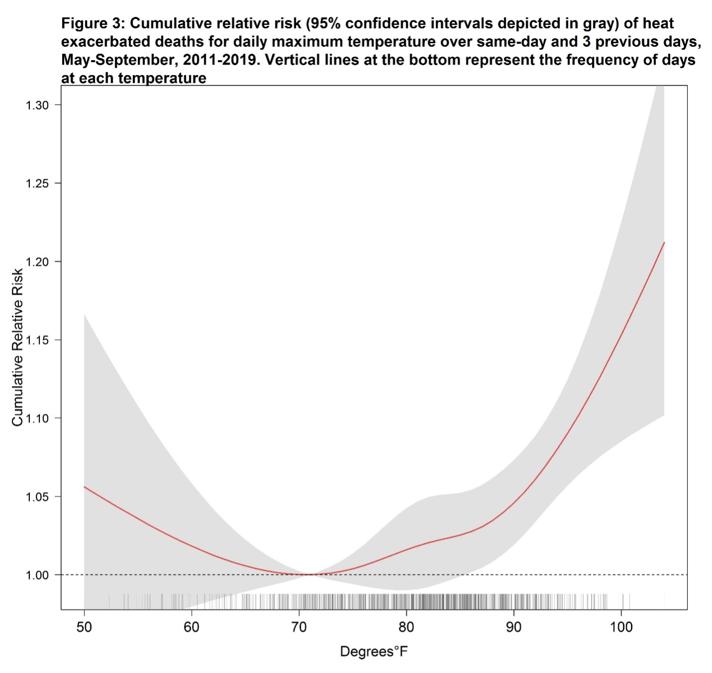
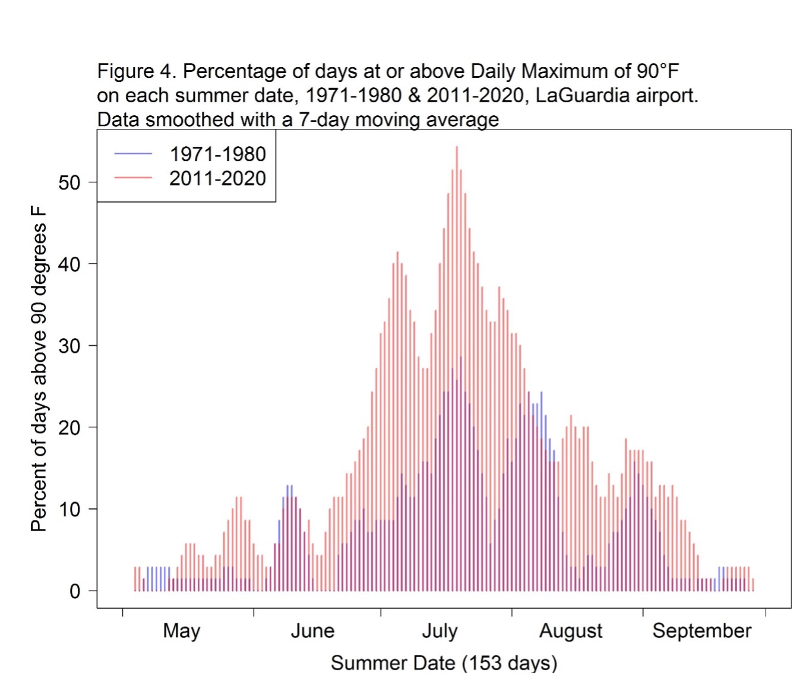

2022 NYC Heat-Related Mortality Report
Summary
-
Each summer, an estimated 370 New Yorkers die prematurely because of hot weather in New York City (NYC). These heat-related deaths account for about 2% of all deaths over the warm season months of May - September. Of the 370 deaths:
- From 2011-2020, there was an average of 10 heat-stress deaths (caused directly by heat).
- From 2011-2019, there was an average of about 360 heat-exacerbated deaths (caused indirectly by heat aggravating an underlying illness).
-
Black New Yorkers are more likely to die from heat stress, with death rates two times higher than among White New Yorkers. This inequity is due to past and current structural racism that creates economic, health care, housing, energy, and other systems that benefit white people and disadvantage people of color.
-
Lack of access to home air conditioning (AC) is an important risk factor for heat-stress death. Among those who died from heat stress, the place of death was most often an un-air-conditioned home. NYC summers are getting hotter. More warm season days now reach hotter temperatures (90°F and higher) compared to a few decades ago.
-
Emergency response to extreme heat must be coupled with equitable investments in structural interventions and heat mitigation measures, for example energy efficient home cooling that New Yorkers can afford to run and tree planting and greening, to protect residents throughout the increasingly hot warm season weather.
Introduction
Hot weather is dangerous to health, sometimes resulting in death. Heat-related deaths are preventable. In this second annual report on heat-related mortality, the Health Department examined data from 2011-2021.
We track heat-related deaths in three ways:
- Heat stress deaths are caused directly by heat and happen when heat-related illnesses such as heat exhaustion and hyperthermia lead to death. These deaths are coded as heat-related in death certificates and cases can be counted and investigated.
- Heat-exacerbated deaths happen when heat worsens existing chronic conditions such as heart disease and diabetes. These deaths are caused indirectly by heat. These deaths are caused indirectly by heat and are estimated using statistical models.
- Neighborhood impacts are tracked by looking at community-level differences in risk of heat-related death and are described using the Health Department’s Heat Vulnerability Index (HVI). Data for HVI inputs remain the same as last year’s report because updated data were not available. This report’s findings are similar to last year’s report.
Heat Stress Deaths
The Health Department examined heat-stress deaths occurring during the warm season months of May through September from 2010-2020. We reviewed death certificates and medical examiner investigation reports in cases where heat was recognized as a cause of death. A more detailed description of methods and data sources can be found here.
Among NYC residents, there were 96 heat-stress deaths over the 10-year period. There was an average of 10 deaths per year, with the largest yearly numbers of deaths occurring earlier in the period as a result of severe heat waves. Most deaths occurred in July (75%) and August (13%), followed by June (8%), May (2%) and September (2%). As of March 2022, there were 4 heat-stress deaths in 2021, though that number is provisional and subject to change because mortality records are not finalized.
Figure 1: Heat-stress deaths and maximum heat index by year, NYC residents, 2011-2020 
Notes: The number of heat-stress deaths for 2020 is provisional. If additional deaths are certified as caused by heat stress the Department will update the number in future reports. Weather data is from the National Weather Service LaGuardia airport station. Heat index is a measure of air temperature and humidity.
Demographics
- The age-adjusted death rate among non-Hispanic Black New Yorkers is twice as high as that of non-Hispanic White New Yorkers (2.2 deaths per million versus 0.9 deaths per million) from 2011-2020. This inequity is rooted in systemic racism.1 Lack of equitable access to resources needed for wellness – for example, jobs that pay a living wage, affordable and healthy housing with air conditioning, and health care – are causes of these differences in heat-related mortality.
- Death rates were higher in neighborhoods with more residents living below the federal poverty line compared with wealthier neighborhoods.
- Age-adjusted death rates were highest in Brooklyn and the Bronx.
- Heat-stress deaths occurred among all age groups, with the lowest rates among people who were 20-29 and the highest among people who were 80 and older.
- About two thirds of heat stress-deaths occurred among men.
Age-adjusted heat-stress deaths by race and ethnicity, 2011-2020 
Deaths are grouped into these five race and ethnicity categories due to the small sample size of deaths and the availability of denominator data. However, these categories represent an oversimplification of the ethnically and racially diverse population found in NYC. People identified as two or more races or races/ethnicities not listed here are included in the other or unknown category, and the Hispanic/Latino category includes people of any race. Differences in mortality rates among racial and ethnic groups are due to long-term structural racism, not biological or personal traits. Structural racism — centuries of racist policies and discriminatory practices across institutions, including government agencies, and society — prevents communities of color from accessing vital resources (such as health care and healthy housing) and opportunities (such as employment and education), and negatively affects overall health and well-being. See Appendix Methods and Supplemental Data for more information on numbers and percentages by race and ethnicity.
Neighborhood poverty level of heat-stress decedents, 2011-2020
| n | % | Avg. annual age-adjusted rate per million | |
|---|---|---|---|
| Low <10% | 16 | 17 | 0.9 |
| Medium 10 to <20% | 32 | 35 | 0.9 |
| High 20 to <30% | 30 | 33 | 1.4 |
| Very High 30% and greater | 14 | 15 | 1.2 |
| Missing/Residence unknown | 4 |
Area-based poverty groups based on neighborhood tabulation area (NTA).
Place of residence of heat-stress decedents, 2011-2020
| n | % | Avg. annualized age-adjusted rate per million | |
|---|---|---|---|
| Manhattan | 17 | 18 | 0.9 |
| Bronx | 15 | 16 | 1.1 |
| Brooklyn | 35 | 38 | 1.3 |
| Queens | 22 | 24 | 0.9 |
| Staten Island | 4 | 4 | 0.8 |
| Homeless* | 3 |
*Based on residence unknown in death death certificate.
Average annual rates of heat-stress by age group, 2011-2020
Sex of heat-stress decedents, 2011-2020
| n | % | Avg. annualized age-adjusted rate per million | |
|---|---|---|---|
| Female | 31 | 32 | 0.7 |
| Male | 65 | 68 | 1.6 |
Health and other risk factors
- Among the deaths with detailed medical examiner records available, more than 90% had at least one chronic health condition.
- Common chronic conditions included cardiovascular disease, substance or alcohol use, serious mental health or cognitive conditions, and having a history of diabetes. Of adults 18-64 years old, 41% had obesity, with a body mass index of 30 or greater.
Table 2: Medical characteristics among subset with review of medical examiner records (n=83)
| n | % | |
|---|---|---|
| One or more chronic conditions | 77 | 93 |
| Evidence of cardiovascular disease | 60 | 72 |
| Evidence of alcohol or substance use | 25 | 30 |
| Evidence of schizophrenia/schizo-affective disorder, cognitive or psychiatric conditions* | 22 | 27 |
| History of diabetes | 19 | 23 |
| History of repiratory conditions | 6 | 7 |
| Cerbral palsy | 2 | 2 |
| Evidence of renal conditions | 4 | 5 |
Heat exposure circumstances
People who died from heat-stress were most often exposed to dangerous heat in their homes (69%, n= 57 of 83 records with detailed information). Another 7% were exposed indoors but not at their own residence. Without AC, indoor temperatures can be much higher than outdoors, especially at night, and can continue for days after a heat wave.2
Among New Yorkers who died after becoming dangerously hot at home, and for whom there was information about the presence or absence of an AC, 81% had no AC and the rest had AC that was either not working or not in use.
More than a quarter (n=16, 28%) of decedents had an electric fan present and on, indicating that only using an electric fan without an AC cannot always prevent death during extreme heat for people who are at highest heat risk.
Previous Health Department studies have found that air conditioning access differs across race and class. Black New Yorkers and low-income New Yorkers are less likely to own or use an AC during hot weather, and the main reason is cost.3 While more than 90% of NYC households have air conditioning, access is also lower in neighborhoods where more people are living with limited financial resources.
Heat-exacerbated deaths
Deaths from chronic conditions that are not recognized as heat-related on death certificates can be estimated using statistical models. There are more of these deaths than those from heat stress and they are called “excess deaths” or “heat-exacerbated deaths.” Unlike heat stress deaths, which can be identified and investigated, excess deaths can only be estimated as aggregate counts. However, estimating heat-exacerbated deaths – or “mortality” – better captures how many people are dying of the heat.
We estimated heat-exacerbated mortality risk and number of deaths for 2011 through 2019 using weather and natural cause death data for May-September in NYC. The average natural death count was about 18,000 deaths for May through September each year. We used statistical models to compare deaths on hot days with those on cooler days. We estimated heat-exacerbated deaths using:
- an indicator for extreme heat event days defined by the National Weather Service’s heat advisory threshold for NYC. Based on the Health Department’s previous analysis of heat-exacerbated mortality, heat advisories are for at least 2 consecutive days with 95°F or higher daily maximum heat index (HI) or any day with a maximum HI of 100°F or higher.
- the range of hot daily maximum temperatures that includes both extreme heat event days and other hot days. We assessed risk for days ranging from the median maximum daily temperature of 82°F through the highest temperature during the period.
In addition, to describe the impact of climate change, we examined how the number of hot days during warm months changed over the past five decades. We included deaths occurring on the date of exposure to hot weather and over the following 3 days, because previous Health Department studies have shown that heat-related deaths can occur up to 3 days after the initial hot weather.4 Detailed methods used to estimate risks and attributable deaths can be found here.
- From 2011 to 2019, the estimated annual average of heat-exacerbated deaths from May-September for all hot days was 364 (95% Confidence Interval [95CI]: 144, 593). Heat-exacerbated deaths make up approximately 2% of all natural-cause deaths in the warm months.
- The estimated annual average of heat-exacerbated deaths associated with extreme heat events was 96 (95% CI: 55, 134).
- Heat-exacerbated mortality risks were observed across the full range of all hot days (maximum temperature at or above 82°F) during the summer months. Risk increased with temperature, with the largest increases occurring at the highest temperatures, and a steeper slope of relative risk above 90°F (see Figure 3). Heat attributable deaths occurred most frequently in July (40%), followed by August (26%), June (17%), September (10%), and May (7%).
Hotter Summers: The proportion of summer days reaching hot temperatures has substantially increased in the latest decade compared to the earliest of the past five decades (Figure 4). More than 20% of late June through mid-August dates during 2011-2020 had daily maximum temperatures of 90°F or higher. More than 30% of Mid-July dates experienced daily maximum temperatures of 90°F or higher. Given the consistently high and increasing proportion of hot days between late June through mid-August, heat-risk mitigation planning needs to emphasize non-emergency planning, such as access to air-conditioning.
 Community-level impacts
The HVI shows differences in community-level heat impacts during and shortly after extreme heat events.5 Unlike many social vulnerability indices, the HVI is derived from NYC mortality data, which means that neighborhoods with elevated risk identified by the index are those areas with elevated heat-exacerbated deaths during extreme heat events. HVI scores range from 1 (lowest risk) to 5 (highest risk). The relative heat mortality risk of each Neighborhood Tabulation Areas (NTA) an be explored here.
The HVI includes measures of surface temperature, green space, air conditioning access, percent of a neighborhood residents who are Black, as this population is the most excluded from heat resources, and the percent of people living below the federal poverty level. Inequities in community-level heat impacts stem from structural racism, which leads to neighborhood disinvestment, racist housing policies, fewer job opportunities and lower pay, and limited access to high-quality education and health care. Read more about how structural racism affects housing and public health and the history of redlining and how it impacts public health in NYC.
The best indicator of neighborhood-level heat impacts is the HVI, which shows differences in heat-exacerbated mortality risk. The number of heat stress deaths by NTA should be interpreted with caution. The NTAs are small and the number of deaths at this level is also small and unreliable, so it is difficult to conclude whether tell differences between areas are due to random fluctuation or represent a real difference in risk.
Conclusions
Heat contributes to the deaths of 370 New Yorkers on average each year during the warm season of May through September. The climate crisis is also making NYC’s warm season hotter. To reduce heat-related deaths in NYC and prepare for a hotter future, the city needs long-lasting structural interventions alongside emergency preparedness and response, including:
- Continue to prioritize high HVI neighborhoods for heat mitigation and structural interventions, such as home cooling assistance, green infrastructure like tree planting and greening, cool roofs, and electric grid resilience to decrease risk. These measures should be coupled with housing and energy policies that help longtime neighborhood residents benefit from improvements without being priced out of the area.
- Support community-based organizations working to reduce the health impacts of heat and climate change in their neighborhoods and include them in decision-making processes about investments in their communities. Fund and provide technical assistance for community resiliency programming by local community and faith organizations, such as the Health Department’s Be a Buddy program, aimed at deepening social connections and providing individuals with access to physical and mental resources to stay safe in the heat.
- Continue to strengthen emergency response measures during periods of extreme heat, such as opening cooling centers and issuing heat-health warnings, prioritizing people and communities with the greatest need for these interventions.
- Extend equitable access to air conditioning to people most impacted by heat through a suite of policies designed to help all New Yorkers realize the benefits of equitable cooling as they weather the effects of the climate crisis.
- Explore regulations to require landlords to provide working air conditioning to tenants and to prohibit additional surcharges on AC use.
- Provide assistance with ongoing summer utility costs through the Home Energy Assistance Program.
- Prohibit electricity disconnections during hot weather, even if bills are unpaid, so people are not exposed to dangerous heat at home and make energy prices affordable for all New Yorkers.
- Support energy efficient home cooling and discourage excess cooling in commercial establishments
Learn more about what the City is doing to mitigate the effects of heat, and how the HVI guides that work, at Cool Neighborhoods NYC. More data and information about heat, climate, and health is also available on the Health Department’s Climate and Health page.
Note on years of data included:
For heat-stress, data for 2020 and 2021 are considered preliminary because death data are still being compiled by the Bureau of Vital Statistics. These numbers may be updated in future reports as final data become available. 2020 heat-stress numbers are less likely to change. All heat-stress tables are based on heat-stress deaths from 2011-2020. The heat-exacerbated mortality analysis requires complete daily counts to produce accurate estimates, making 2019 the most recent available year of data.